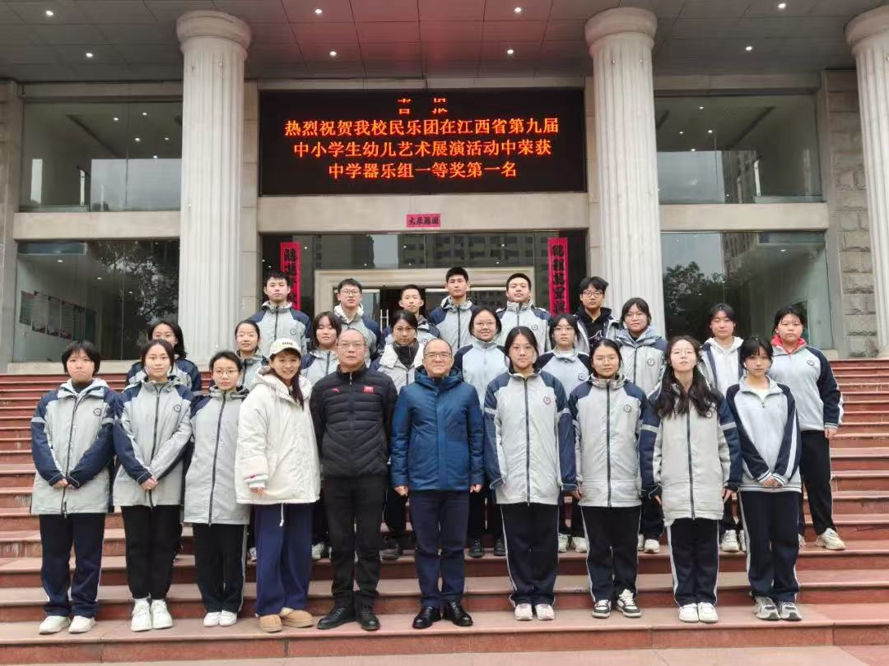

热烈祝贺南昌中学民乐团在全国第八届中小学生艺术展演活动中荣获全国一等奖！
指导老师：白梦
参赛学生名单：易若涵、张芷墨、熊浩宇、曾忆蓉、张焮枝、朱熙雯、李楚煊、熊艺霖、孔庆扬、居仕强、姚仕霖、周柔良、邢钰宁、余青青、黄佳丰、许潇宇、张智东、谢璐羽、万玖玖、刘章卿、李思睿、王俪瑾、熊慧妍、李雯睿、 胡 扬、符睿仪、高宏宇、李明昊、 肖一如、万柯吟、 万茁怿
南昌中学政教处 2025年4月9日
回顾此次比赛，从数月前的精心筹备，到舞台上的完美呈现，每一个环节都凝聚着师生们的心血。民乐团的同学们凭借对民族音乐的热爱与执着，在紧张的学习之余，坚持刻苦排练。指导老师们悉心指导，从曲目选择到细节雕琢，力求让每一个音符都能打动人心。比赛当天，乐团成员们精神饱满，以精湛的技艺演绎了极具民族特色的经典曲目，将传统音乐的魅力展现得淋漓尽致。他们的演奏不仅展现了高超的音乐素养，更传递出对中华优秀传统文化的深刻理解与传承精神，赢得了现场评委与观众的热烈掌声和高度赞誉。
这份荣誉的取得，是南昌中学坚持素质教育、重视艺术教育的成果体现。学校始终致力于为学生搭建多元化的成长平台，让每一位同学都能在艺术的熏陶中提升综合素养。南昌中学民乐团自成立以来，不断发展壮大，多次在省市级比赛中取得优异成绩，已然成为学校文化建设的一张亮丽名片。相信在未来，南昌中学民乐团将继续秉持对民族音乐的热爱，不断探索创新，再创辉煌，为弘扬中华优秀传统文化贡献更多力量！